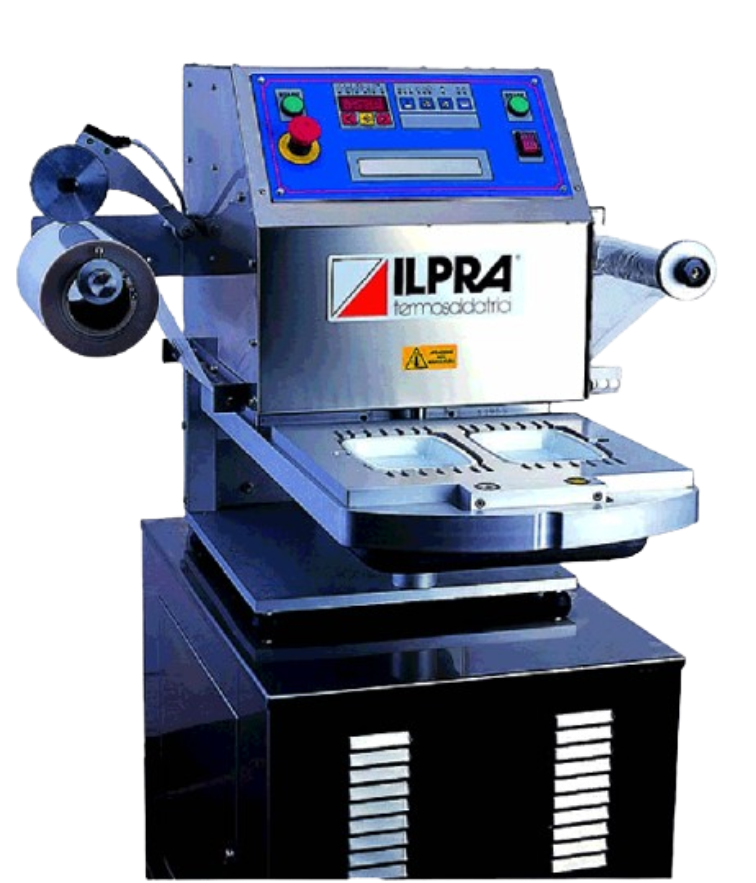
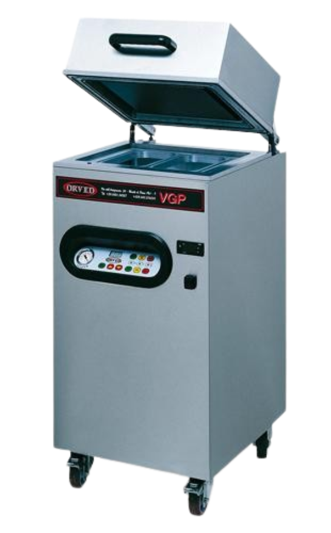

Karpide pakendamine
Poolautomaatne
ILPRA ROTOBASIC

Rotobasic on populaarseim kapide kilekeevitusmasin gaasikeskkonnas pakendamiseks.
Vaatamata kompaktsetele mõõtmetele on ROTOBASIC suuteline pakendama vaakumi ja gaasiga kuni 8 tsüklit minutis!
See on võimalik tänu kahepoolsele karussellauale - ühel pool vahetatakse pakendid ja teisel pool toimub töötsükkel.
Vaakumi- ja gaasitsükli kiirendamiseks kasutatakse uudset PROGAS tehnoloogiat, mis annab gaasi otse karpi ja vähendab ka gaasikulu!
Uus Rotobasic mudel omab kaablivabasid töövorme, mis teeb vormivahetuse kiireks ja lihtsaks (ca 3 minutit).
Uuendusena saab kasutada Rotobasicu töövorme ka automaatses mudelis Speedy Linear.
Rotobasic on parima hinna ja kvaliteedi suhtega masin turul!
Rohkem infot: ILPRA ROTOBASIC
ORVED VGP

Innovaatiline karpide kilekeevitusmasin - VGP, on väga paindlik lahendus väiketööstusele võimaldades pakkida ühe masinaga kõik tooted gaasikeskonnas (MAP). Lisaks ei vaja antud seade suruõhku, mis teeb võimalikuks masina kasutamise ka restoranides ja poodides!
Masina on valmistatud roostevabast terasest ja varustatud digitaalse sensorjuhtimisel põhineva juhtpaneeliga. Mikroprotsessor kontrollib kogu töötsüklit ja võimalike puuduste korral annab sellest operaatorile märku. Seetõttu ei ole võimalik praaktoodangu tekkimine.
Antud masinaga on võimalik vaaakumpakendada ka vaakumkilekotte, mis lisab universaalsust veelgi.
Masin on väga pika tööeaga ja kulunud osad on vajadusel lihtsalt vahetatavad operaatori poolt.
Masina vastab kõige kõrgematele ohutuse ja hügieeninõuetele.
Rohkem infot: ORVED VGP